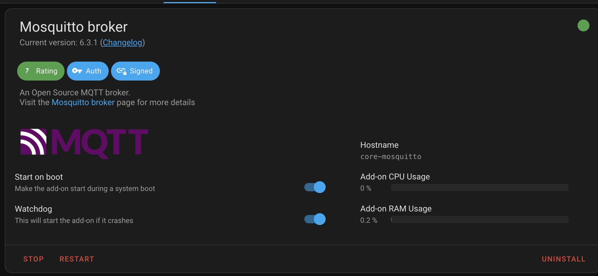
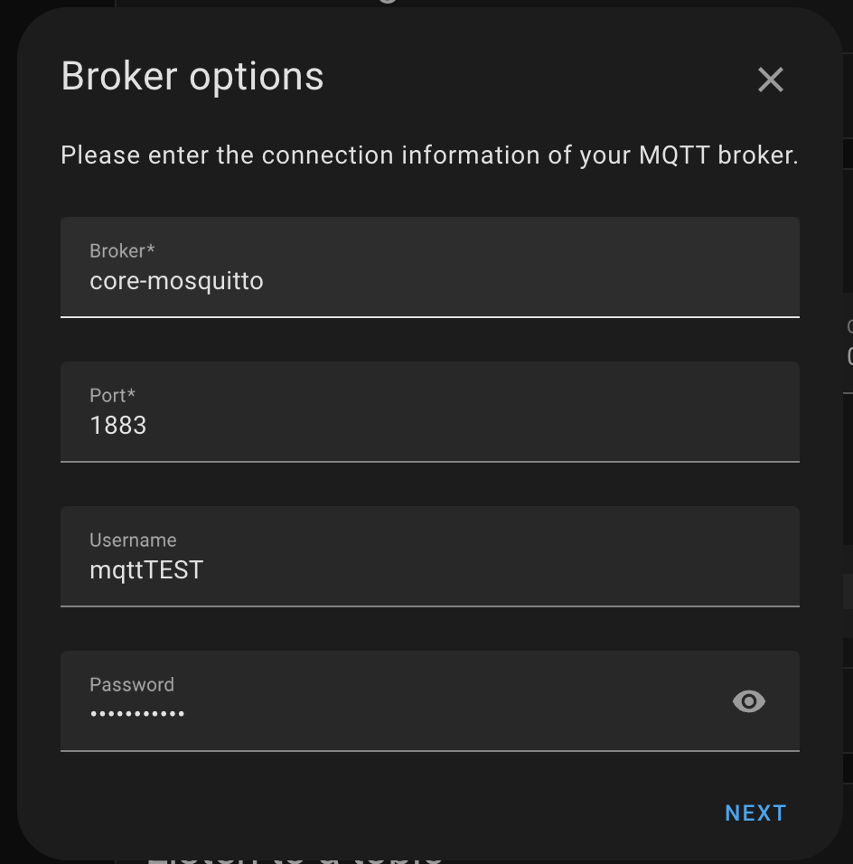
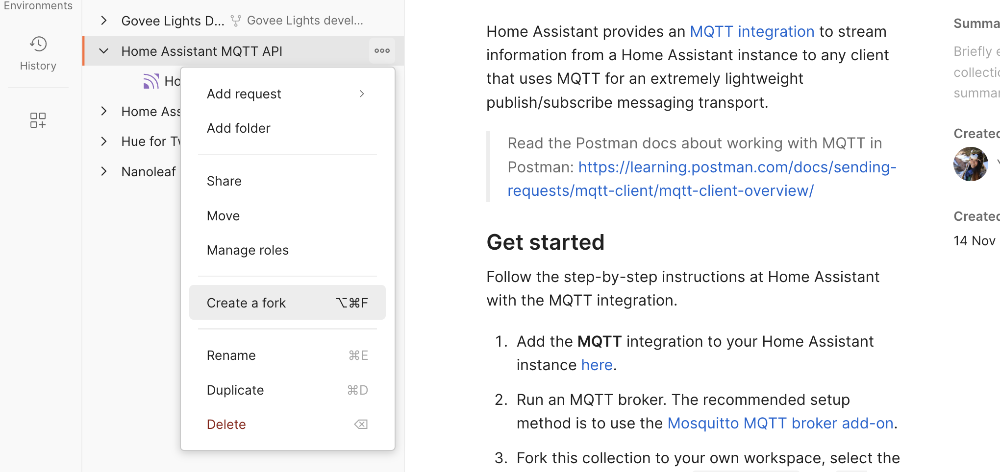
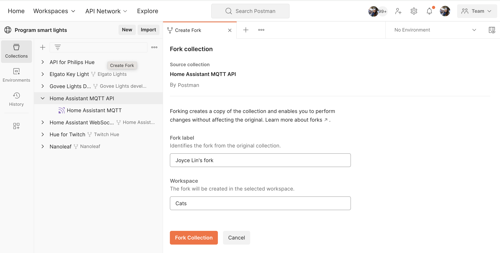
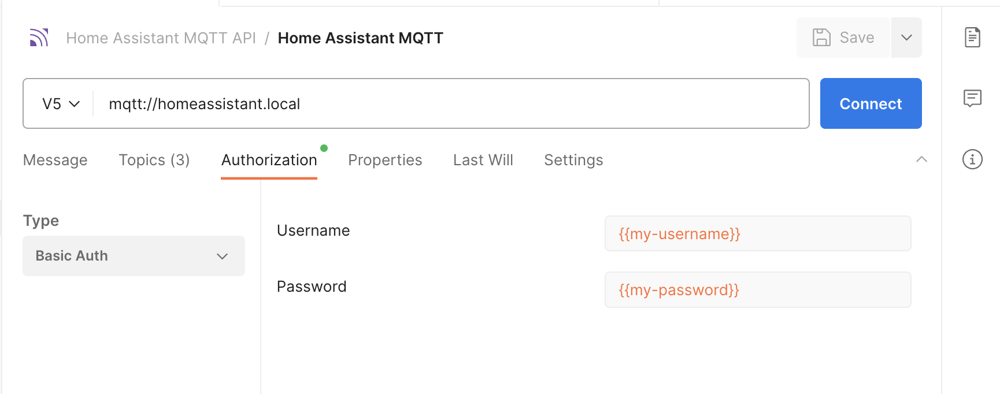
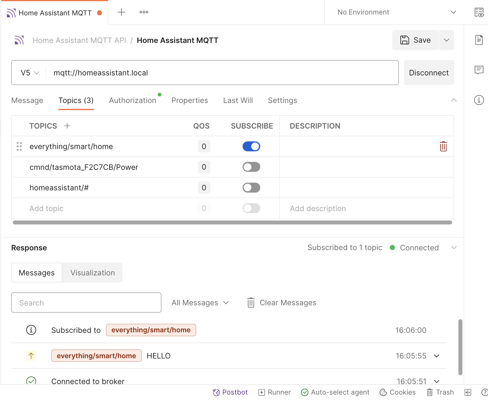
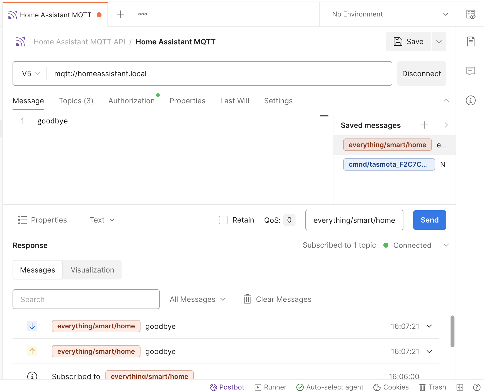

Prerequisites
- Familiarity with DIY home automation and Home Assistant
- Some connected device, such as smart lights, smart speakers, or digital assistant
What You'll Learn
- how to establish an MQTT connection
- how to authorize Home Assistant APIs
- how to send and receive MQTT messages
What You'll Need
- a Home Assistant Account
- Home Assistant instance running on local server, such as Raspberry Pi
- a Postman Account
What You'll Build
- A Postman collection with saved MQTT messages
Watch this video to follow along at each step:
Home Assistant is a popular open-source home automation platform that provides a unified interface to control and monitor different smart devices. Instead of juggling separate apps for different brands, you can manage everything through a single Home Assistant web dashboard on a local server like Raspberry Pi.
We've previously explored Home Assistant's WebSocket API using Postman. Now let's delve into Home Assistant's MQTT integration, used by 44% of all active installations, to access smart devices across your connected home.
REST, WebSockets, and MQTT for connected home
When it comes to transmitting data in a connected home environment, REST, WebSockets, and MQTT are commonly used protocols, but for different use cases.
- With REST, you have a request-response pattern, where a client sends a request to a server, and the server responds with the requested data. This is good for turning on a light or retrieving information about a set of devices.
- With WebSockets, you have bidirectional streaming between a client and server with real-time messages being relayed. This is helpful for ongoing updates, such as for a live dashboard displaying the status of all the connected devices in your home.
- With MQTT, you have real-time data transmission, similar to WebSockets, but optimized for low-power and low-bandwidth devices. Clients publish data to a centralized broker or hub, who then relays this data to other clients who have subscribed to receive notifications about a particular topic. This publish-subscribe messaging pattern is good for smart home devices that might lose and then resume a connection.
In the next section, let's try using MQTT with Home Assistant for home automation.
- Create a new user: In the Home Assistant dashboard, under Settings > People, create a new user (or Person) to log in and access Home Assistant. Make a note of the
usernameandpasswordfor the new user, since we will use those credentials to configure our MQTT devices and authorize our MQTT messages.
- Choose an MQTT broker: In this tutorial, we will set up the Mosquitto MQTT broker add-on. Under Settings > Add-ons > Add-on store, find, install, and start "Mosquitto broker". This might take a few minutes. Once the add-on is started, make a note of the
Hostnamefor the next step.  - Add the MQTT integration: On the Integrations page of your Home Assistance dashboard, you might already see an MQTT integration under "Discovery" that you can add. Otherwise, find and add the "MQTT" integration or using this link. You will need
Hostnameof the broker from Step 2, andusernameandpasswordfrom the user created in Step 1. 
Fork the Postman collection
- Find the sample collection in Postman, Home Assistant MQTT, and fork the collection to your own Postman workspace. 
- Enter a label for your fork and select the workspace to fork the collection: 
Authorize API requests
- Add variables: Select the collection you just forked into your own Postman workspace, and add your new Home Assistant user credentials under the Variables tab, and Save your updates.

- Review authorization details: Notice the variables are used under the Authorization tab of each request in the collection. 
Connect to the broker
- Establish a connection: Connect to
mqtt://homeassistant.localand observe the connection details reflected on the bottom. This is also where you will see inbound and outbound messages displayed.
- Send a message: Under the Message tab, publish data to a specified topic. For example, try inputting text like "Hello" to the topic
everything/smart/homeand hit Send. You can also save messages to re-use later on.
- Subscribe to a topic: Under the Topics tab, subscribe to a topic such as
everything/smart/homeby switching the toggle on. This means the Postman client is subscribed to receive any data published to that topic.  - Send a second message: Now try sending a different message to the same topic
everything/smart/hometo see what happens. Postman can send messages, and also receive messages published to the topic that it is subscribed to. This messaging pattern is called publish-subscribe. Notice outbound messages are displayed next to an up arrow, and inbound messages are displayed next to a down arrow. 
If you have a device that communicates over MQTT, you may need to configure the device to enable Home Assistant discovery. Every device and manufacturer is likely to follow a different process, so the following steps are just one example.
- Configure Tasmota device: MQTT is the main protocol for controlling Tasmota devices. After you have a working MQTT broker you need to configure Tasmota to communicate with it.

- Control Tasmota device: The Tasmota documentation provides examples of commands we can send over MQTT to control our Tasmota device. We can also save messages to re-use later on.

Depending on the response format, you can also select the Visualization tab of the response to show a message stream in a graphical format, a more comprehensible way to view telemetry data. Learn more about the MQTT response.

Watch this video to recap the steps:
What we've covered
- how to establish an MQTT connection
- how to authorize Home Assistant APIs
- how to send and receive MQTT messages
For more hands-on tutorials, check out these resources.
- Home Assistant with WebSocket APIs quickstart
- Contribute your own tutorials here
Additional resources for Home Assistant
- Home Assistant MQTT integration
- Home Assistant WebSocket API documentation
- Home Assistant REST API documentation
Additional Postman resources
- Home Assistant REST API: Postman collection
- Program smart lights: Postman public workspace
- MQTT overview: Postman documentation